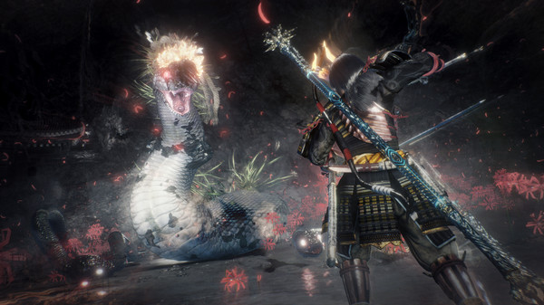

Nioh 2
Annak ellenére, hogy mekkora siker lett a From Software Souls-szériája, csak kevés fejlesztőstúdió próbálkozott meg a formula lemásolásával. Egy-egy ötletet szinte minden játék elcsent a Dark Soulsból vagy a Bloodborne-ból, de hasonló felépítésű cím készítésébe, vagy akár a stílus megreformálásába csak kevesen kezdtek bele. A legemlékezetesebb próbálkozás a 2017-ben megjelent Nioh volt, melyet a Ninja Gaiden-sorozatról elhíresült Team Ninja készített el. A csapat elég jól vette az akadályt, és nem csak hogy degradáló lenne a soulsborne-klón jelzőt használni a játékra, de hibái ellenére simán odatehetjük a címet a From Software klasszikusai mellé.

A Nioh 2 lényegében nem változott, a fejlesztők az elődben bevált ötletekre építkeztek, és ehhez dobtak hozzá pár újítást. Ez egyrészt jó hír, hiszen aki az első játékot imádta és megismerte, hamar otthon fogja érezni magát a folytatásban is. Az első rész azonban közel sem volt tökéletes, a rossz hír pedig a fentiek alapján adja magát: a hiányosságokat sem sikerült pótolni. Mielőtt azonban bárki mérges komment írására adja a fejét, megnyugtatom az olvasót, a Nioh 2 nem rossz játék, sőt. A harcrendszer továbbra is parádés, és kissé talán bonyolultabb mivolta ellenére könnyebb ráérezni a kaszabolásra, mint a From Software alkotásai esetében. Hamarabb elérjük a flow-élményt, amikor már nem arra koncentrálunk, hogy mit is kellene épp tenni az adott ellenféllel, hanem szinte automatikusan nyomjuk meg a megfelelő gombokat.